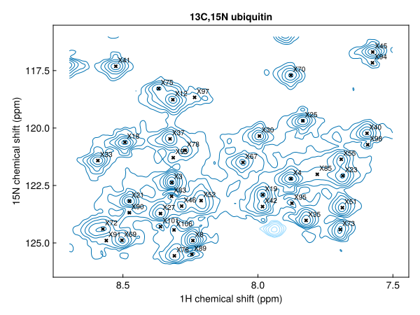
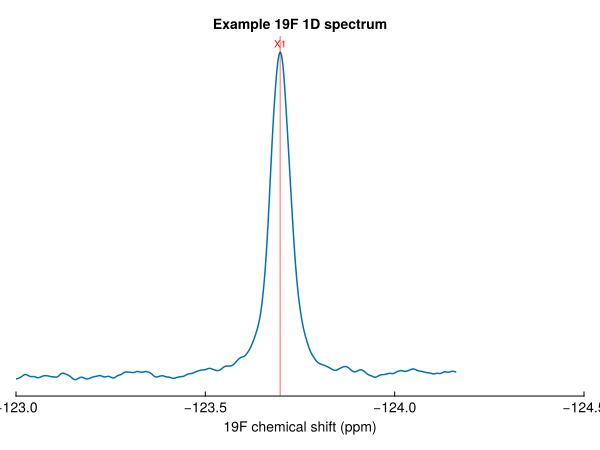

Peaks and peak lists
NMRTools represents a peak with the Peak type: a position in ppm, a height, a linewidth in Hz and a label. A peak list is a Vector{Peak{N}}, so the usual tools for vectors (sorting, filtering, indexing, push! and deleteat!) all work. This tutorial picks the peaks of a 2D spectrum, looks at them, and saves them.
Detecting peaks
detectpeaks finds the peaks in a 1D, 2D or higher-dimensional spectrum:
using NMRTools, CairoMakie
spec = exampledata("2D_HN")
pks = detectpeaks(spec; sign=:positive)106-element Vector{Peak{2}}:
label x (ppm) y (ppm) lwx (Hz) lwy (Hz) intensity
X1 7.79577 114.958 18.7071 18.606 88641.3
X2 8.36937 111.268 20.8663 21.3132 83539.6
X3 8.31883 122.37 19.5823 25.193 71443.8
X4 7.87775 122.204 26.8778 23.9376 67824.8
X5 7.06773 112.628 16.0961 18.7858 63339.3
X6 6.98976 127.845 NA 22.117 56918.4
X7 7.01687 121.93 23.5222 22.0615 53612.3
X8 8.24091 124.896 21.3806 25.1384 53330.8
X9 6.92844 127.831 37.1131 22.3159 52537.1
⋮
X98 7.59331 120.726 20.377 20.4424 5738.33
X99 7.64939 113.101 26.6429 34.4897 5693.7
X100 7.58808 108.69 20.405 14.8804 5640.63
X101 8.36093 124.289 23.864 NA 5391.35
X102 9.04388 121.923 23.2359 28.4145 5376.75
X103 8.45677 113.449 31.7347 17.0753 5193.3
X104 8.77356 122.897 20.8266 23.2174 5174.74
X105 7.79259 114.465 12.9459 8.51764 5166.77
X106 8.31072 124.433 29.1047 46.1701 5153.01A peak is a local maximum whose height exceeds a threshold, by default ten times the noise level. Positions and heights are refined beyond the digital resolution by parabolic interpolation, and the linewidth in each dimension is estimated from the half-height crossings. Peaks are returned strongest first and labelled X1, X2, … to match the labels NMRAnalysis.jl gives new peaks.
Plotting peaks
nmrplot! overlays a peak list on a spectrum. 2D peaks are drawn as labelled crosses:
fig, ax, _ = nmrplot(spec[7.5 .. 8.7, 116 .. 126])
nmrplot!(filter(p -> 7.5 < ppm(p, 1) < 8.7 && 116 < ppm(p, 2) < 126, pks))
1D peaks are drawn as vertical lines, with their labels along the top of the axis:
spec1d = exampledata("1D_19F")
fig, ax, _ = nmrplot(spec1d; xlims=(-123, -124.5))
nmrplot!(detectpeaks(spec1d))
Looking at a peak
Use the accessor functions to read a peak's properties:
p = pks[1]
ppm(p) # position, ordered like the spectrum's dimensions(7.7957671281768794, 114.95784886559858)linewidth(p) # full width at half maximum in each dimension, in Hz(18.70706633504243, 18.605996730028355)intensity(p) gives the height and label(p) the label. Linewidths are kept in Hz because they mean the same thing on every nucleus and at every field; the corresponding relaxation rate is π * linewidth(p, n). A quantity that is not known, such as the linewidth of a peak read from a Sparky list, is NaN.
Peak lists are tables
A peak list is a Tables.jl table, so it can be turned into a DataFrame or written with CSV.jl. Sorting and filtering use the accessors:
strong = sort(pks; by=intensity, rev=true)[1:5]5-element Vector{Peak{2}}:
label x (ppm) y (ppm) lwx (Hz) lwy (Hz) intensity
X1 7.79577 114.958 18.7071 18.606 88641.3
X2 8.36937 111.268 20.8663 21.3132 83539.6
X3 8.31883 122.37 19.5823 25.193 71443.8
X4 7.87775 122.204 26.8778 23.9376 67824.8
X5 7.06773 112.628 16.0961 18.7858 63339.3amides = filter(p -> 7.5 < ppm(p, 1) < 9, pks)
length(amides)73Labelling peaks
Peaks are immutable, so changing a peak means making a new one. Peak(p; ...) copies a peak with any of its fields replaced:
pks[1] = Peak(pks[1]; label="G10")
pks[1]Peak{2} G10
position (ppm): 7.79577, 114.958
linewidth (Hz): 18.7071, 18.606
intensity: 88641.3findpeak finds the maximum nearest a given position, and labels it:
findpeak(spec, (8.5, 120.0); label="L23")Peak{2} L23
position (ppm): 8.49265, 120.619
linewidth (Hz): 26.5436, 22.7097
intensity: 42729.4Saving the list
savepeaks writes a peaklist.csv that NMRAnalysis.jl reads directly, and loadpeaks reads it back:
file = joinpath(mktempdir(), "peaklist.csv")
savepeaks(file, pks)
loadpeaks(file)[1:3]3-element Vector{Peak{2}}:
label x (ppm) y (ppm) lwx (Hz) lwy (Hz) intensity
G10 7.79577 114.958 18.7071 18.606 88641.3
X2 8.36937 111.268 20.8663 21.3132 83539.6
X3 8.31883 122.37 19.5823 25.193 71443.8Next steps
- Assigning ubiquitin from the BMRB: predict this spectrum's peaks from assigned chemical shifts, and register them onto it
- Detect peaks: thresholds, negative peaks, regions and 3D data
- Save and load peak lists: file formats, including Sparky